Very minimal notes on some papers or articles that I recently read. Mainly for logging purposes.
Soft Robotics
Soft Robotics: A Perspective—Current Trends and Prospects for the Future
Carmel Majidi : 2013
Source
- Soft robots are primarily composed of easily deformable matter such as fluids, gels, and elastomers that match the elastic and rheological properties of biological tissue and organs. Like an octopus squeezing through a narrow opening or a caterpillar rolling through uneven terrain, a soft robot must adapt its shape and locomotion strategy for a broad range of tasks, obstacles, and environmental conditions. This emerging class of elastically soft, versatile, and biologically inspired machines represents an exciting and highly interdisciplinary paradigm in engineering that could revolutionize the role of robotics in healthcare, field exploration, and cooperative human assistance.
- Most suitable for environments and applications that require interaction with soft materials and organisms and/or artificial replication of biological functions.
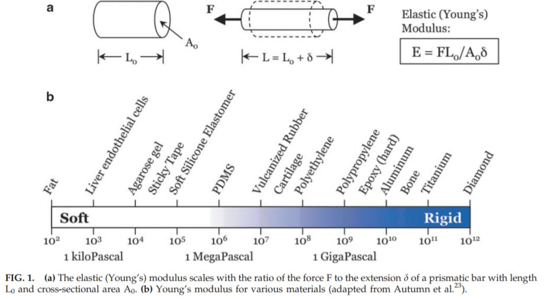 - Compliance Matching
- To prevent injury or robot immobility, the surface e of soft robots must be adequately soft and deformable in order to distribute forces over a large contact area and eliminate interfacial stress concentrations.
- Compliance matching is particularly important in the subdomain of wearable technologies for human motor assistance.
- Potential Applications
- Soft wearables for human motor assistance.
- Biologically inspired field robots for autonomous exploration.
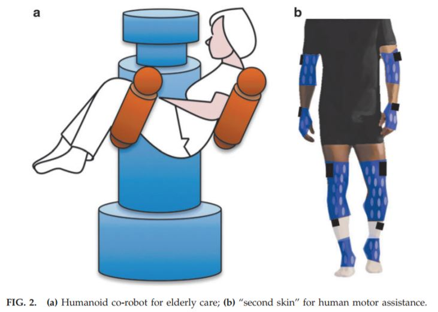 - At the scales of invertebrates, insects and microorganisms, may also eventually be used for drug delivery, minimally invasive surgery, and medical implants.
- It is unlikely that they would be useful for heavy-duty industrial applications.
- Beyond Robotics
- As the field of soft robotics grows, the supporting softmatter technologies used in sensing, electronics, and actuation will continue to mature and will eventually appear in application domains.
- Strechable microelectronics.
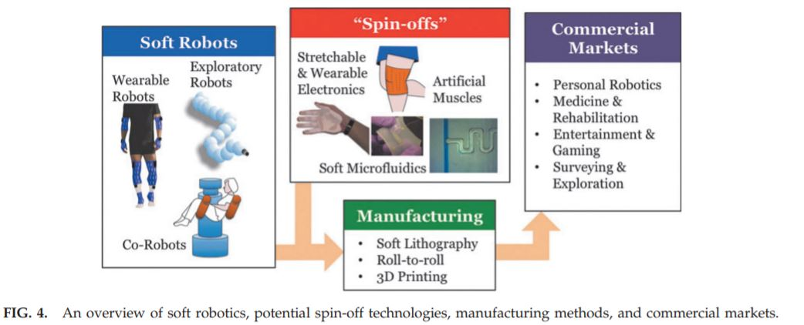
A Resilient, Untethered Soft Robot
Michael T. Tolley et. al
Source
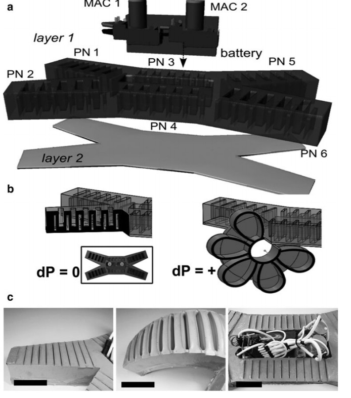
Pneumatic actuation of untethered quadrupedal soft robot.
(a) Schematic representation of the components of the mini air compressor (MAC)-driven, battery powered soft robot. Layer 1 consisting of six Pneu-Nets (PN) is sealed onto layer 2.
(b) Schematic representation of a cross-section of Pneu-Net 1 as its internal pneumatic network is pressurized.
(c) Photographs of Pneu-Net 1 at rest (left) and pressurized to 16 psi (middle). Photograph of electronic components (mini air compressors, battery pack, relays, and circuit boards) between Pneu-Nets 3 and 4 (right) that drive the robot.
-
Experimental design as a starting point for further research.
-
Research for selection of materials, more description in the original paper.
-
Uses electrically operated air compressors to provide pneumatic actuation. 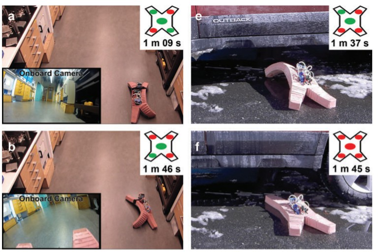
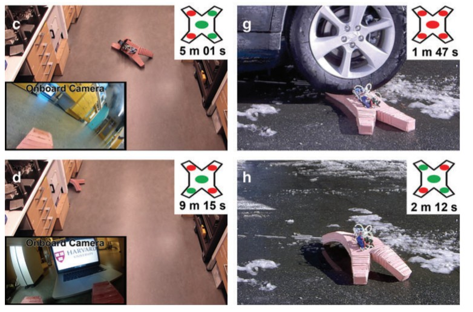
Untethered operation of the quadrupedal soft robot.
(a–d) Untethered soft robot conducting indoor surveillance with the view of the onboard camera overlaid. The robot starts moving forward with a straight ambulatory gait (a).
The robot switches to a turning gait to explore a passageway on the left (b, c). The robot uses its onboard camera to image a hidden laptop (d).
(e–h) Untethered soft robot operating outdoors before and after being run over by a car (e). The robot depressurizes its actuators in preparation for impact (f). The car running over the elastomeric legs of the soft robot (g). The soft robot actuating and standing up after being ran over by the car (h). Green dots on the figures in the upper-right corner of each frame indicate which PNs are currently actuated (pressurized); red dots indicate unactuated PNs. -
Discusses gait patterns and control parameters in detail.
-
Resilient to harsh environments like fire, snow and water.
-
Final cost of a single assembly, $1111.
Design, fabrication and control of soft robots
Daniela Rus and Michael T. Tolley
Source
- Biological inspirations for soft robots.
- Move with the ability to bend and twist with high curvatures and thus can be used in confined spaces.
- Deform their bodies in a continuous way and thus achieve motions that emulate biology.
- Adapt their shape to the environment employing compliant motion and thus manipulate objects or move on rough terrain and exhibit resilience.
- Execute rapid, agile maneuvers, such as the escape maneuver in fish.
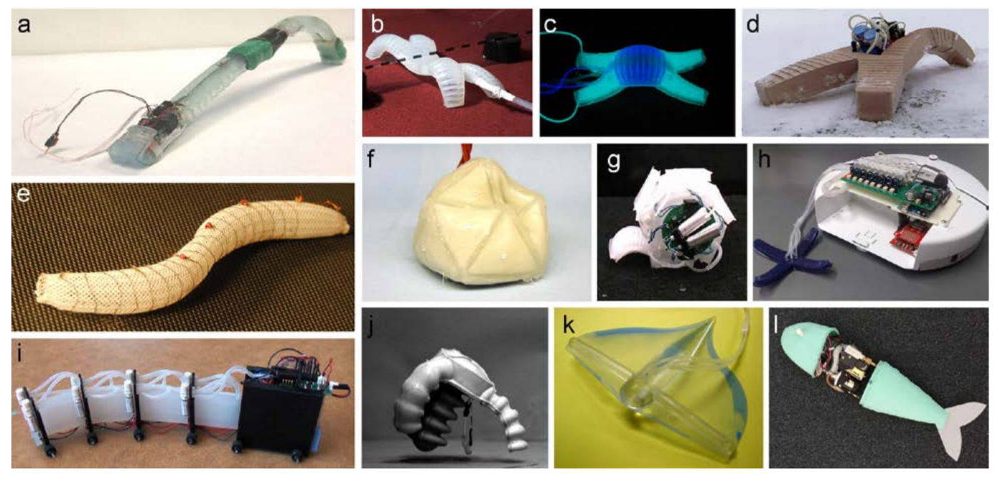
Mobile soft robotic systems inspired by a range of biological systems, demonstrating
a) caterpillar-inspired locomotion,
b) a multi-gait quadruped,
c) active camouflage,
d) walking in hazardous environments,
e) worm-inspired locomotion,
f) particle jamming-based actuation,
g) rolling powered by a pneumatic battery,
h) a hybrid hard/soft robot,
i) snake inspired locomotion,
j) jumping powered by internal combustion,
k) manta-ray inspired locomotion, and
l) an autonomous fish.
Design and Fabrication
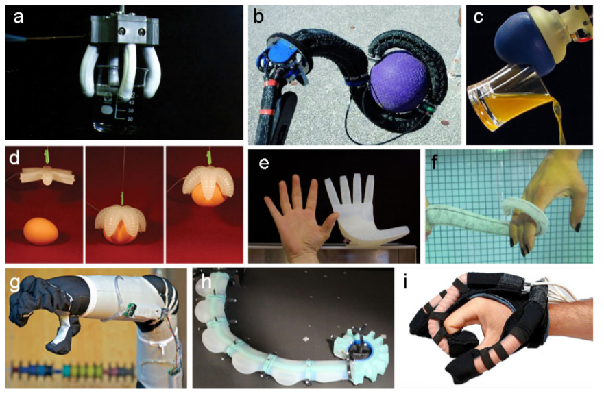
Grasping and manipulation, canonical challenges in robotics, can be greatly simplified
with soft robotics. Examples of experimental soft robotic manipulations systems demonstrating
a) microactuation,
b) soft continuum manipulation,
c) grasping with particle jamming,
d) simple gripper fabrication by soft lithography,
e) underactuated dextrous grasping,
f) octopus inspired manipulation,
g) inflatable robotic manipulators,
h) feedback control of a multisegmented arm,
i) a soft glove for rehabilitation.
Actuation
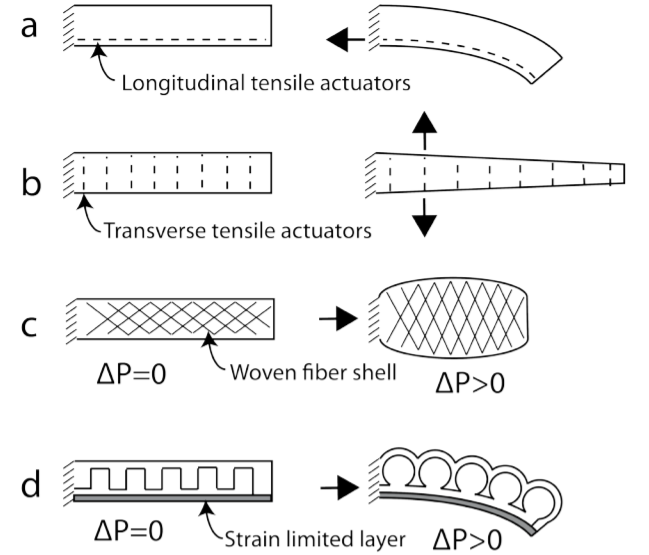
Common approaches to actuation of soft robot bodies in resting (left) and actuated
(right) states.
a) Longitudinal tensile actuators (e.g. tension cables or shape memory alloy
actuators which contract when heated) along a soft robot arm cause bending when activated.
b) Transverse tensile actuators cause a soft robot arm to extend when contracted (a muscle
arrangement also seen in the octopus).
c) Pneumatic artificial muscles composed of an elastomeric tube in a woven fiber shell. A
pressure applied internally causes the tube and shell to expand radially, causing longitudinal contraction.
d) Fluidic elastic actuator or Pneu-Net design consisting of a pneumatic network of channels in an elastomer that expand when filled with a pressurized fluid, causing the soft body to bend toward a
strain limited layer (e.g. a stiffer rubber or elastomer embedded with paper or other tensile fibers).
- Commonly uses one of the two approaches
- Variable length tendons (robotic octopus arm)
- Pneumatic actuation
- Regardless of the actuation method, soft actuators are frequently arranged in a biologically inspired agonist-antagonist arrangement (like muscles) to allow bi-directional actuation.
- Another benefit of this arrangement is that co-contraction of muscle pairs leads to adaptable compliance.
- Another focus has been electroactive polymers(EAPs).
Stretchable Electronics
- Sensing
- Flexible-bending sensors based on piezoelectric polymers, but these are not stretchable. Proprioceptive sensors uses curved layered structures filled with a liquid conductor.
- Power Sources
- A big challenge.
- Design
- Traditional CAD is not designed with layered freeform structures in mind.
- Custom FEA softwares like VoxCAD are used.
- Fabrication
- Multimaterial 3D printing, shape deposition manufacturing and soft lithography.
Computation and Control
- Controlling soft robots requires new approaches to modeling, control, dynamics, and high-level planning.
- Taking inspiration from biological systems.
- Modeling and Kinematics
- Requires continuous mathematics, instead of rigid-link based system analysis.
- Various different models are used based on simplifying assumptions using piecewise constant curvature models for forward kinematics.
- IK is more challenging.
- Exact solutions are not available.
- Control
- The problem is as challenging as IK, however, due to compliant nature of soft robots, they can execute operations without precise control and positioning.
Systems and Applications
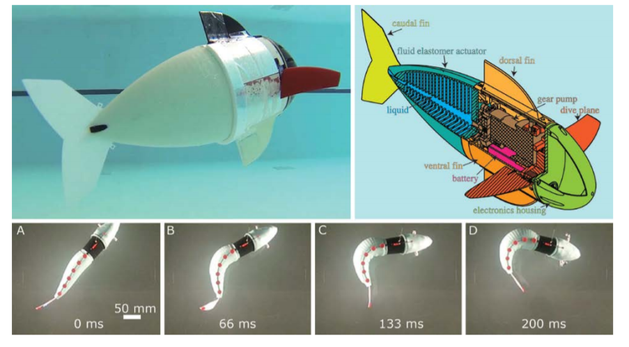
(Top) Soft robotic fish physical prototype and design schematic.
(Bottom) Images from a high speed video of the fish executing a c-turn escape maneuver, with elapsed time indicated.
- Locomotion
- One approach to achieving mobile systems is to tether a soft robot to a mobile rigid robot with a greater carrying capacity.
- Manipulation
- Soft systems have a natural advantage over rigid robots in grasping and manipulating unknown objects due to compliance.
- Medical/Wearable Applications
- Soft robots are the most natural option for medical applications.
- Examples, orthopedic rehabilitaation, wearable input devices, soft orthodics, soft system for simulation of cardiac actuation.
- Soft Cyborgs
Future Directions
- Soft robots are the way to home automation, where they can work more close to humans.
- Ex. physiotherapy, babysitting etc.
- How do we get there,?? We need,
- rapid design tools and fabrication recipes for low cost soft robots.
- novel algorithmic approaches to the control of soft robots that account for their material properties.
- tools for developing device-specific programming environments that allow non-experts to use the soft machines.
- creative individuals to design new solutions
- early adopters of the technology.
- Augmentation (using rigid skeletons) is going to be very crucial.
A Hybrid Combining Hard and Soft Robots
Adam A. Stokes : 2013
Source
- One feature that distinguishes hard and soft robots is mechanical compliance.
- The paper discusses,
- Design of the hard robotic subsystem
- Design of the electropneumatic control subsystem
- Design of the soft robotic subsystem.
- Design of the hybrid subsystem.
- Design of the communication system.
- Results and Discussion
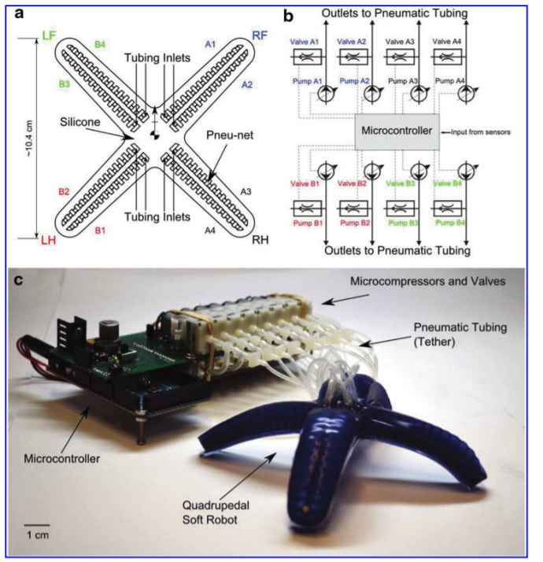
(a) A plan-view schematic of the design of the pneu-net-based quadrupedal soft robot. Each of the four legs contains two independently actuated pneu-nets. A full technical drawing is provided by Supplementary Figure S2.
(b) A system diagram showing the pneumatic and electrical control system.
(c) A photograph showing the soft robot, pneumatic tether, microcontroller, and pneumatic control system.
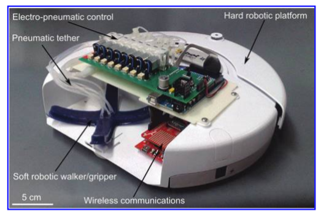
A photograph of the hybrid robotic platform showing the wheeled hard robot (iRobot Create) and the legged soft robot. The hard robot carried, in marsupial fashion, the legged soft robot, the electropneumatic control system, and the wireless communications system. This figure does not show the wireless camera that was mounted on the hard robot.
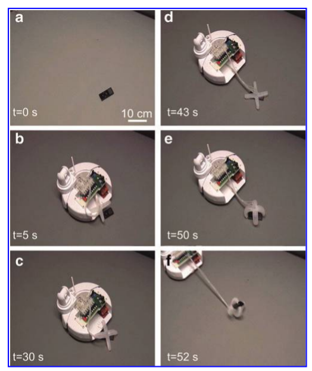
A series of still frames from Supplementary Video S1 show the hybrid robotic system retrieving an object (iPod Nano) from the center of a room (a–f ).
The hard robot carries the soft robot to the object (b).
The soft robot first acts as a walker (c–d) and then as a gripper (e).
When the hard robot is driven away (f ), the soft robot inverts and protects the iPod as it is pulled to a new location.
An Untethered Miniature Origami Robot that Self-folds, Walks, Swims, and Degrades
Daniela Rus et. al
Source
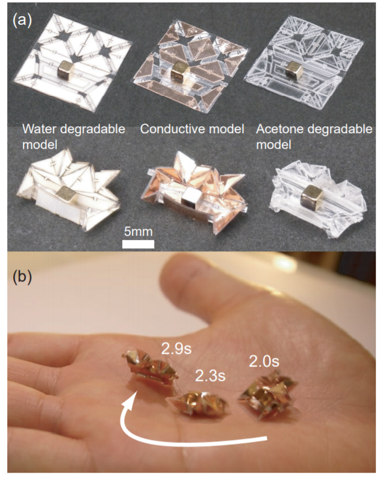
The developed origami robot.
(a) (From left to right) water-degradable model whose outer layer dissolves in water;
conductive model (aluminum coated polyester); acetone-degradable
model whose entire body (except magnet) dissolves in acetone.
(b) Self-folded robot (controlled by a magnetic field) walking on a palm.
- In this paper,
- Performing on-site origami sheet self-folding followed by untethered actuation.
- Developing the robot’s control method for walking and swimming using a newly developed electromagnetic system.
- Testing the robot’s ability to perform basic tasks and behaviors.
- Demonstrating the robot’s ability to degrade, as a proof of convept.
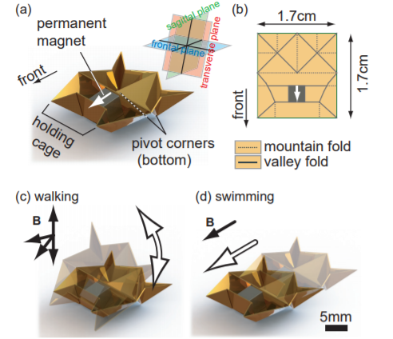
The designed mobile robot and the actuation methods.
(a) The outlook.
(b) The crease pattern.
(c) Walking mode by torquebased control.
(d) Swimming mode by force-based control.
A Brief History Of Oribotics
Matthew Gardiner
Source
Oribotics is origami that is controlled by robot technology; it is paper or foldable material that will fold and unfold on command.
- Oribotics has its roots in generative animation code Root 2 and Orimmatic.
- A hybrid of science and art, the paper discusses various iterations of the bot along with its inspirations.
Cloud Robotics
A Survey of Research on Cloud Robotics and Automation
Ben Kehoe, Sachin Patil
Source
- Cloud is defined as, a model for enabling ubiquitous, convenient, on demand network access to a shared pool of configurable resources (e.g., servers, storage, networks, applications, and services that can be rapidly provisioned and released with minimal management effort or service provider interaction”
- And, cloud robot and autonomous systems are defined as, Any robot or automation system that relies on either data or code from a network to support its operation, i.e., where not all sensing, computation, and memory is integrated into a single standalone system
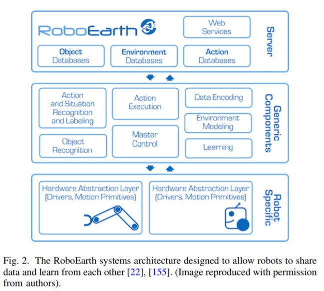 - Big Data
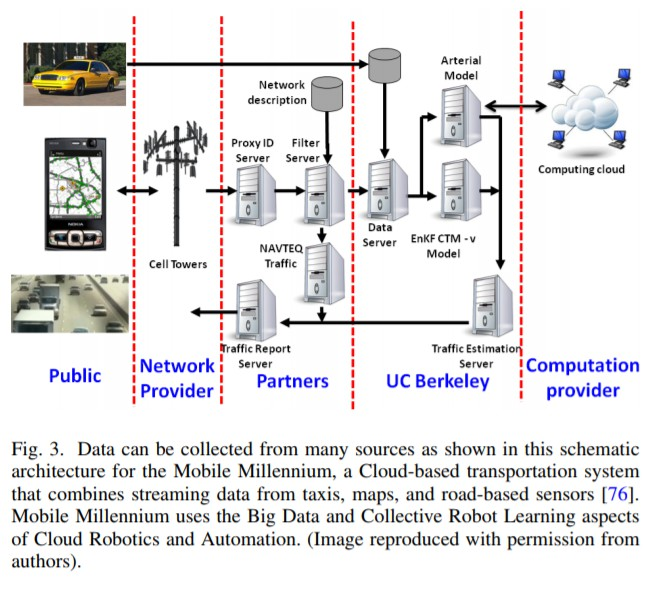
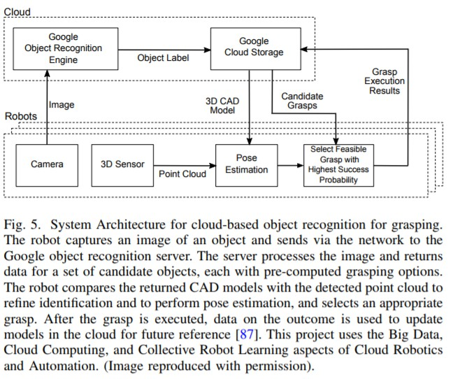 - Includes everything from image data from computer vision tasks to cad data for AR, grasping and pose estimation.
- Cloud Computing
- Includes remote localization and mapping(SLAM), motion planning and more. 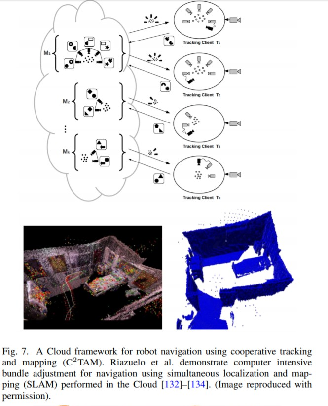
- Collective Robot Learning
- CloudThink, MyRobots and other collective open frameworks. 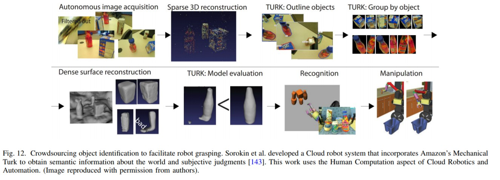
- OpenSource
- ROS, CloudSim OpenRave, Gazebo, Arduino
- Raven, RoboEarth, RAaaS
Human Robot Interaction
Robotics and Autonomous Systems
*Thibault Kruse, Amit Kumar Pandey, * Source
- Human-aware navigation is the interaction between research on human-robot interaction and robot motion planning.
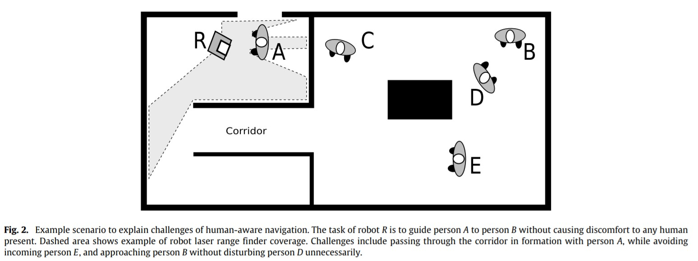 - Challenges of human-aware navigation
- Comfort : absence of annoyance and stress for humans in interaction with robots.
- Eliminate the obvious causes of discomfort.
- Naturalness : similarities between robots and humans in low-level behavior pattern.
- Robot motion should be “predictable” by humans.
- Sociability : adherence to explicit high-level cultural conventions.
- Social/cultural rules like standing in a queue, and gaze.
- Context based affordances like not obstructing the view to the TV.
- Comfort : absence of annoyance and stress for humans in interaction with robots.
- Towards a human-aware navigation framework 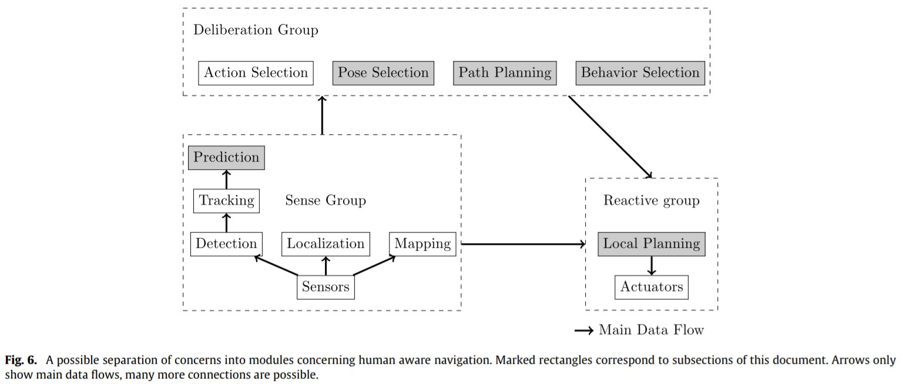
- Prediction based on geometric reasoning or machine learning.(or both)
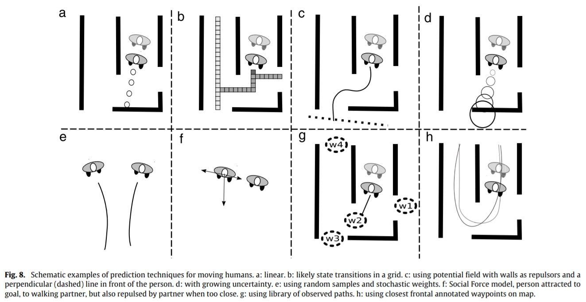 - Pose Selection
- Path Planning and human-aware cost functions.
- Behavior Selection for interacting with humans.
- Local Planning for collision avoidance to ensure the safety of the robot and the environment.
- And the above feautes need to be integrated together.
The Uncanny Valley
Masahiro Mori : More than 40 years ago
Source
- How creepy are humanoid robots.
- Most functions are monotonous, but this one is not.
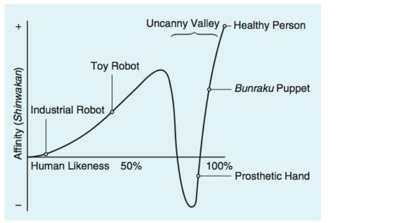
The graph depicts the uncanny valley, the proposed relation between the human likeness of an entity and the perceiver’s affinity for it. [Translators' note: Bunraku is a traditional Japanese form of musical puppet theater dating from the 17th century. The puppets range in size but are typically about a meter in height, dressed in elaborate costumes, and controlled by three puppeteers obscured only by their black robes.] - The Effect of movement.
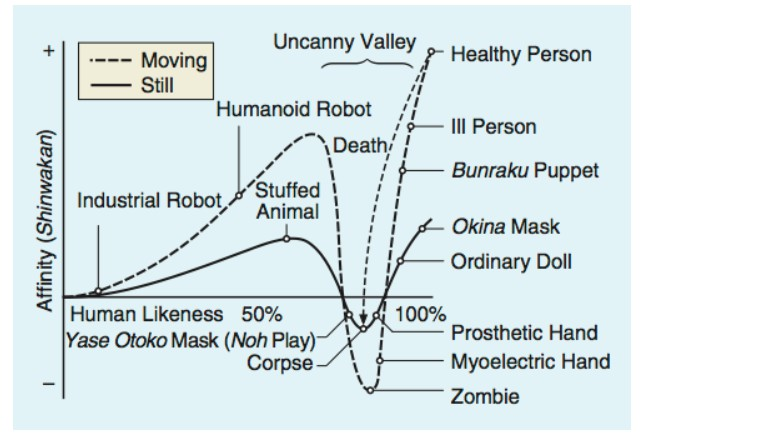
The presence of movement steepens the slopes of the uncanny valley. The arrow’s path in the figure represents the sudden death of a healthy person. [Translators' note: Noh is a traditional Japanese form of musical theater dating from the 14th century in which actors commonly wear masks. The yase otoko mask bears the face of an emaciated man and represents a ghost from hell. The okina mask represents an old man.] - Movement can greatly amplify the creepiness of a prosthetic hand, or a complete humanoid bot.
- Escape by design
- Design to make them look functional(think about eyeglasses not looking like real eyeballs).
- An Explanation of the Uncanny
- No real explanation available, but we still need to map this function accurately so as to build socially acceptable bots.
All robots are not created equal: The design and perception of humanoid robot heads
Carl F. Disalvo et. al
Source
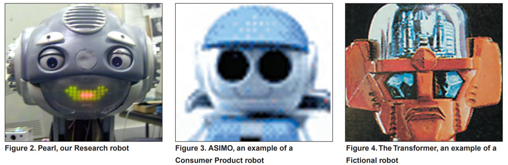
- Motivations for design of the (modular)head for Pearl. 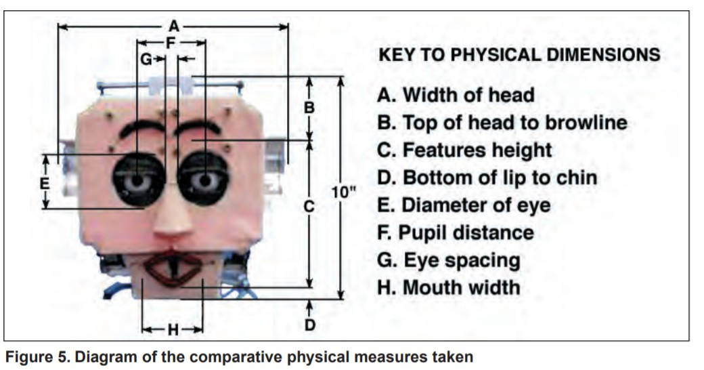
- Findings influencing the comparisons
- The presence of features
- The dimensions of the head and features and the total number of features
- Robot heads in comparison to human heads
- How human-like is Humanoid?
- Design suggestions for a Humanoid Robotic head
- Wide head, wide eyes : to maintain the robot-ness
- Features that dominate the face : less space for forehead, hair, jaw and chin, to maintain robot-ness.
- Complexity and detail in the eyes : They express.
- Four or more features : More features provide more human-ness.
- Skin : Depends on the applications, but consumer products must have some kind of skin.
- Humanistic form language : Organic curves and shape to increase the resemblance.
Social LSTM: Human Trajectory Prediction in Crowded Spaces
Alexandre Alahi et. al
Source
- We can read other peoples movements, but how can we make the bots do the same. 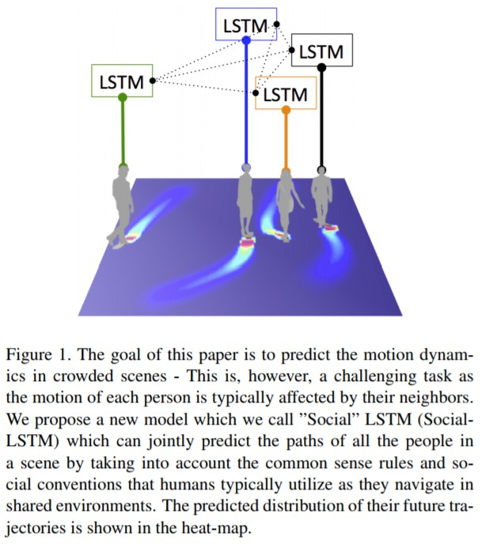
- Previous works try to model these interactions, which results in failure in generalization
for complex crowd activities.
- Human-human interactions : Social force model, Gaussian processes and more hand crafted features.
- Activity forecasting : Predict motion in a video, inverse reinforcement learning, mostly based on static scene understanding.
- RNN models for sequence prediction
- Social LSTM
- Inspired from LSTMs. But they themselves don’t have the ability to capture dependencies among multiple correlated sequences.
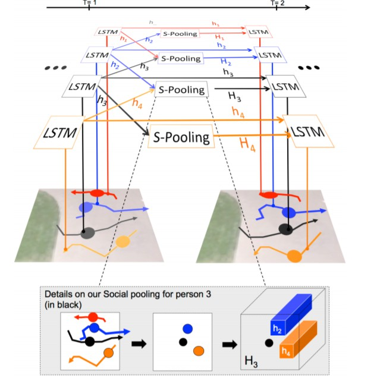
Overview of our Social-LSTM method. We use a separate LSTM network for each trajectory in a scene. The LSTMs are then connected to each other through a Social pooling (S-pooling) layer. Unlike the traditional LSTM, this pooling layer allows spatially proximal LSTMs to share information with each other. The variables in the figure are explained later. The bottom row shows the S-pooling for one person in the scene. The hidden-states of all LSTMs within a certain radius are pooled together and used as an input at the next time-step. - Each scene is first pre-processed to obtain the spatial coordinates of all the people at different times.
- Introduces social pooling layers for social entities to share information and state.
- The pooling tries to preserve some spatial information through grid based pooling.
- More variations are used, for example only sharing the estimated position(occupancy maps) between neighbors.
- More implementation details in the paper.
- Explains the architecture, different cost functions and comparison with previous state-of-the-art models.
What Should We Want From a Robot Ethic?
Peter M. Asaro
Source
- Humans need to deal with ethics all the time.
- In case of robots with ethics, we have at least three distinct ways of thinking about it,
- How humans act ethically, through or with robots?
- How to design robots that act ethically?
- Should robots have ethics(or rights)?
- Robots(and humans) can have varying degree of morality.
- Amoral robots, controlled by moral humans.
- Robots with moral significance, performing actions irrespective of their moral weights.
- Robots with moral intelligence built in by moral humans.
- Robots with dynamic moral intelligence that can evolve their own ethical systems.
- Consciousness, self-awareness, fear of pain and death, reflexive deliberation and self evaluation of ethical systems and moral judgments.
- By the last degree of morality, the robots might even demand their rights.
- Responsibility and Agency in Socio-Technical Systems
- Contrast a robot with a corporation instead of a human in terms of legal treatment.
- Most important decisions to be made belong to the battle ground.
Robot ethics: a view from the philosophy of science
Guglielmo Tamburrini
Source
- Robot ethics and models of robot-environment interactions
- Whether and how to isolate environmental factors affecting robotic behaviors is crucial.
- How to properly identify, specify and maintain normal operating conditions.
- Robot Soldiers: Task Requirements and Ethics
- Have already been deployed in Iraq and Afghanistan.
- Are remote controlled systems classified as robots?
- It has been widely established that completely autonomous robots would be more ethical on the battlefield, however they don’t have the capability to do so yet.
- In fact, such an autonomous system would be sufficiently advanced to solve any other problem that artificial intelligence and cognitive robotics will ever be confronted with.
- This is an AI-complete problem, and state-of-art is hardly close to it.
- Autonomy and Responsibility Issues For Learning Robots
- Learning agents must have some kind of background knowledge about how to generalize, and must operate in some sufficiently pre-determined, stochastic environment characterized by some fixed statistical distribution.
- The information processing abilities of learning robotic systems, whose behavioral effects are not fully predictable by their users, suggest juridical and ethical analogies between learning robots and learning biological systems that are capable of perceiving, planning and acting.
- Robotic myths, ethics, and scientific method
- Great expectations.